E. M A U S S I O N


Deux ans aux beaux arts et une passion qui ne le quittera jamais, en bon dilettante il s’adonne à son art en amateur pour son plaisir en ne se fixant qu'à ses goûts et ses impulsions.... Une envie de créer et une opportunité feront naître «Trempe» ces portraits, ces regards d'hommes figés l'espace d'une seconde et qui laisse libre cours à imaginer leurs états d âme… L’important pour lui étant de créer une émotion, un sentiment… Une réaction !
 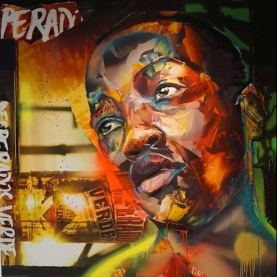
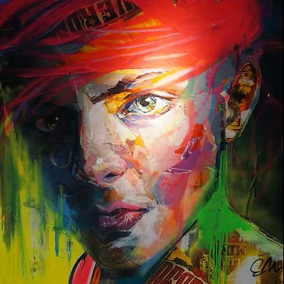
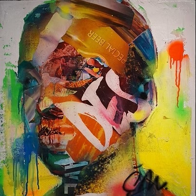
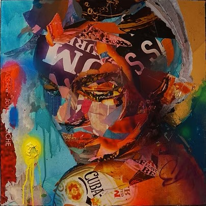
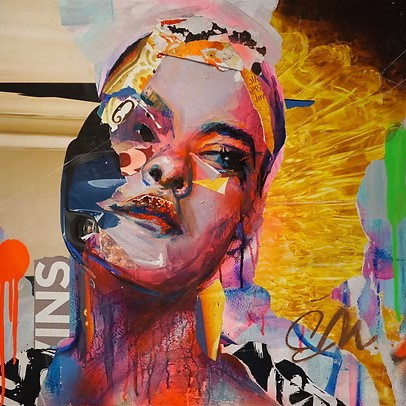
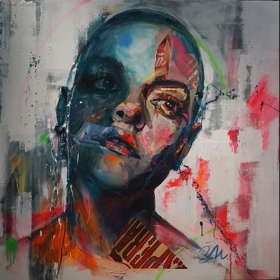
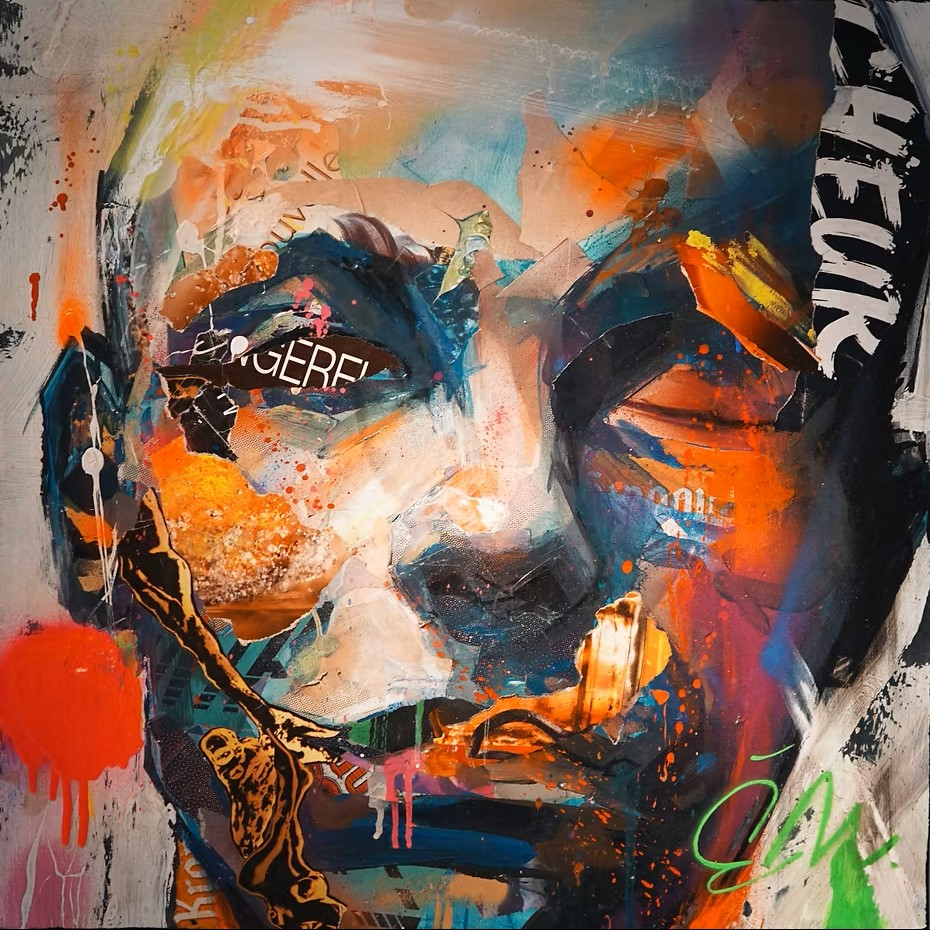
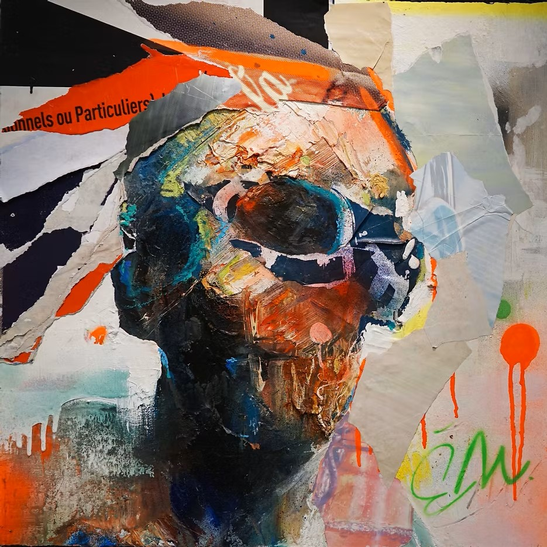
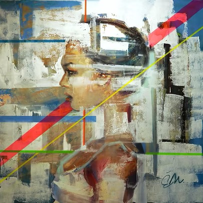
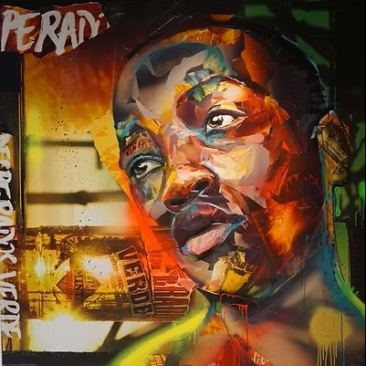
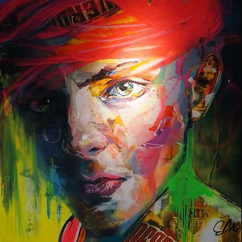
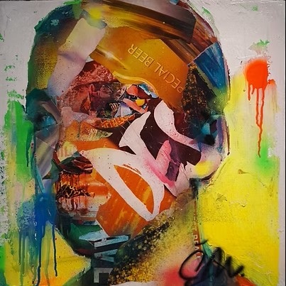
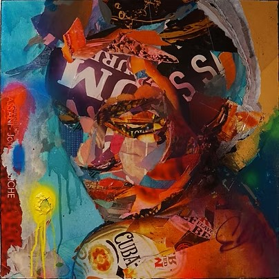
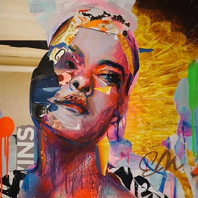
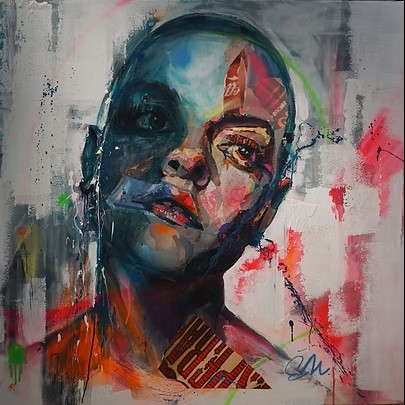
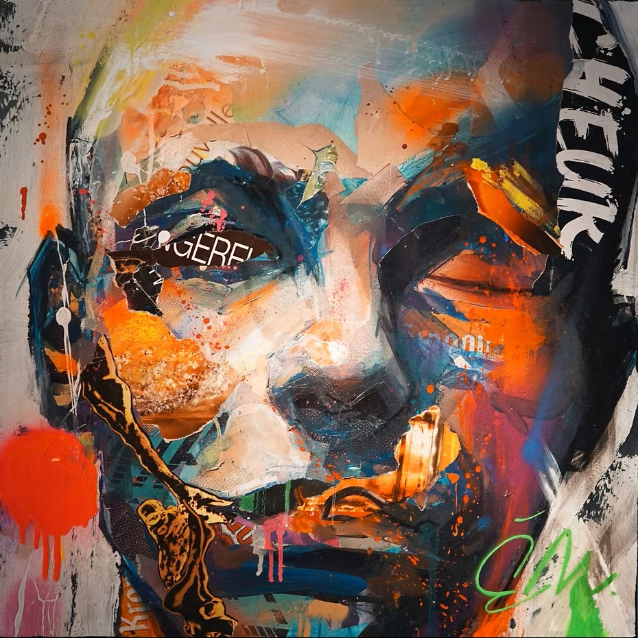
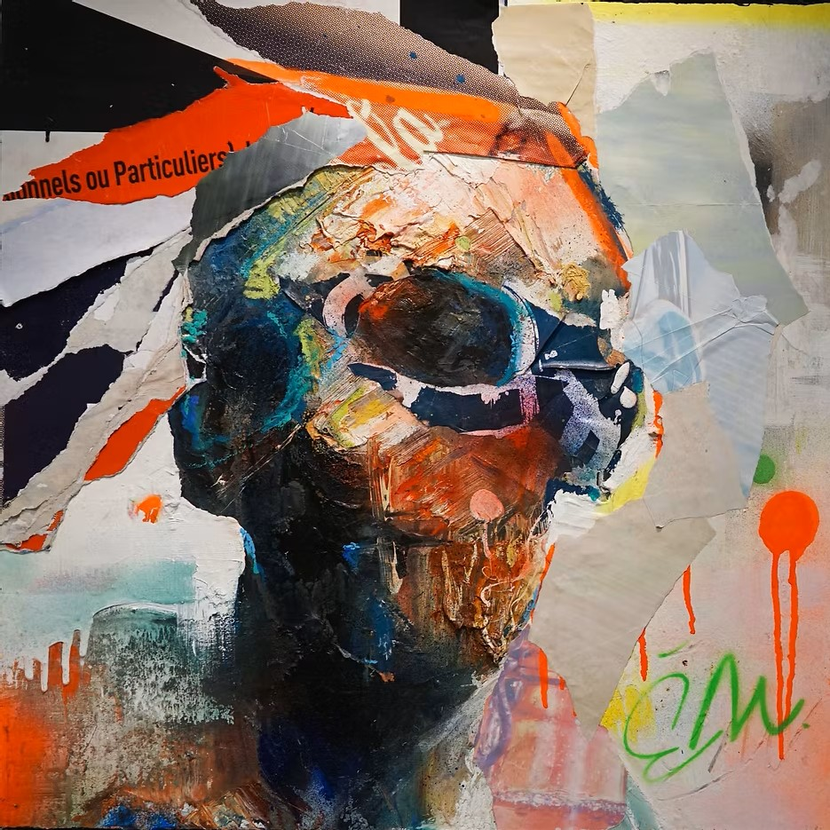
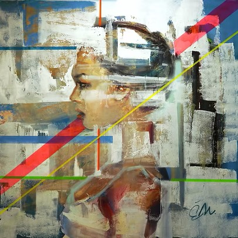
Après deux succès remarquables à la galerie K, Émeric Maussion, artiste du Mans, nous revient avec de nouvelles oeuvres impressionnantes. Pièces uniques jamais présentées ailleurs. Nouvelle technique autour de son sujet de prédilection, le visage… Le regard. Artiste discret qui personnalise ses oeuvres d’une puissance certaine, il a conquis de nombreux collectionneurs. Son ascension confirme son talent. Un grand peintre du Mans… (unidivers.fr)


Après avoir fait une série intitulée TREMPE exposée en 2014 à la Galerie K au Mans, sa ville natale, Emeric MAUSSION, renouvelle une série de portrait toujours dans du grand format mais avec cette fois-ci quelques femmes et un travail beaucoup plus dans le détail. Pour la deuxième exposition à la Galerie, E MAUSSION nous montre ses œuvres avec sensibilité, émotion et talent. Un travail progressif, inspiré des grands maitres de la peinture et de l'art urbain. Une série des vissages expressifs qui devront séduire les amateurs d'art.
Made by Tom, EvergreenTh 2025